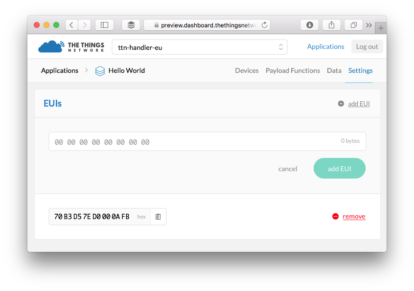

The Things Network Console
Your Applications and Devices can be managed via The Things Network Console.
Every component in the console has a small icon. Click the icon for more information.
Prerequisites
- An account on preview.account.thethingsnetwork.org
Create Account
To use the console, you need to create an account on preview.account.thethingsnetwork.org. Once you have validated your e-mail address, you will be able to login to preview.console.thethingsnetwork.org.
Let’s use a table to help you not to get confused. 😬
| Console Server | Account Server |
|---|---|
| preview.console.thethingsnetwork.org | preview.account.thethingsnetwork.org |
| staging.thethingsnetwork.org | account.thethingsnetwork.org |
Add Application
Devices can communicate with applications that they’ve been registered to. To register a device, you’ll first need to add an application.
-
In the console, click add application.
- For Application ID, choose a unique ID of lower case, alphanumeric characters and nonconsecutive
-and_. - For Application Description, enter anything you like.
- Leave the checkbox enabled to automatically register the application to your default region.

- For Application ID, choose a unique ID of lower case, alphanumeric characters and nonconsecutive
-
Click Add Application to finish.
You will be redirected to the newly added Application page where you can find the generated App EUI and Access Keys.
Register Device
To communicate with an application added via the console, you will first need to register the device to the application.
To register you’ll need to get the Dev EUI of your device first.
- Form the application page, select Devices from the top right menu.
-
In the Devices box, click register device.
- For Device ID, choose a - for this application - unique ID of lower case, alphanumeric characters and nonconsecutive
-and_. -
For Device EUI, copy-paste the DevEUI you retrieved from your device.
If you plan to switch to ABP anyway, just leave it to be generated.
- Leave the App Key to be randomly generated.
- For App EUI, select the generated EUI from the list.

- For Device ID, choose a - for this application - unique ID of lower case, alphanumeric characters and nonconsecutive
-
Click Register to finish.
You will be redirected to the newly registered device where you can find the generated App Key needed to activate the device.
Personalise device for ABP
Normally, you’d use Over The Air Activation (OTAA) to negotiate session keys for further communication. You have the option to personalise a device, which means you will generate or assign session keys manually and use hard code them on the device.
In production, you’ll want to use OTAA. This is more reliable because the activation will be confirmed and more secure because the session keys will be negotiated with every activation. ABP is useful for workshops because you don’t have to wait for a downlink window to become available to confirm the activation.
- In the console, go to the device you’d like to personalise.
- From the top right menu, select Settings.
-
Click on personalize device, just right of the Device Settings header.
- Leave the Network Session Key and App Session Key to be generated for you or click customize it if you’d like to set them yourself.

-
Click Personalize to finish.
You will be redirected back to the device, where you will find the Device Address and session keys needed to activate the device.
Migration Guide
This guide will walk you through migrating applications and devices from staging.thethingsnetwork.org to preview.console.thethingsnetwork.org.
The migration does not require any changes to devices that use OTAA (the default). Devices that use ABP will need their sketch to be updated with a new Device Address.
Applications
For each application you’d like to migrate:
- On staging, click the application you’d like to migrate to see the Application Info box.
- In preview, go to add application.
- For Application ID, use anything you like as long as it is unique and only uses low case alphanumeric charachters and nonconsecutive
-and_. - For Application Description, copy the Application name from staging.
- For Application ID, use anything you like as long as it is unique and only uses low case alphanumeric charachters and nonconsecutive
- From the Application Overview page of the newly created application, click Settings on the top right.
- In the box EUI, click remove right of the App EUI that was generated for you.
- Click the add EUI or Add one! link.
- Copy-paste the App EUI from the Application Info box on staging.

Payload Functions
If you have customized the payload functions you’ll need to migrate those as well:
- On staging, in the Application Info box click edit after Payload Functions.
- In preview, click Payload Functions on the top right.
-
For each of the Payload Functions you have customized, copy-paste the function body from staging to preview and click Save.
You might notice the default payload functions are no longer anonymous, but you can just paste the anonymous functions from staging.
Devices
For each device you’d like to migrate:
- On staging, click the application you’d like to migrate devices from.
- In the Devices box click the Dev EUI of the device you’d like to migrate to see its Device info box.
- In preview, click the migrated application to go to its Application Overview page.
- Click Devices on the top right.
- Click register device.
- For Device ID, use anything you like as long as it is unique and only uses alphanumeric charachters and nonconsecutive
-and_. - For Device EUI, click customize it and copy-paste the Dev EUI from staging.
- For App Key, click customize it and copy-paste the App Key from staging.
- For App EUI, click to select the App EUI from staging which you added when you migrated the application.
- For Device ID, use anything you like as long as it is unique and only uses alphanumeric charachters and nonconsecutive
Made a mistake? You can always come back to the devices and click Settings on the top right to change all of the above settings, except the Device ID.
Devices registered for ABP
If you had your device registered for ABP, follow these additional steps:
- Navigate to the registered device if you’re not there already after registering it.
- Select Settings from the top right menu.
- Click the personalize device link aligned right of the Device Settings header.
- For Network Session Key, click customize it and copy-paste the Network Session Key from staging.
- For App Session Key, click customize it and copy-paste the App Session Key from staging.
- Connect the device.
-
Update the following line of your sketch with the generated Device EUI:
const char *devAddr = "00000000";